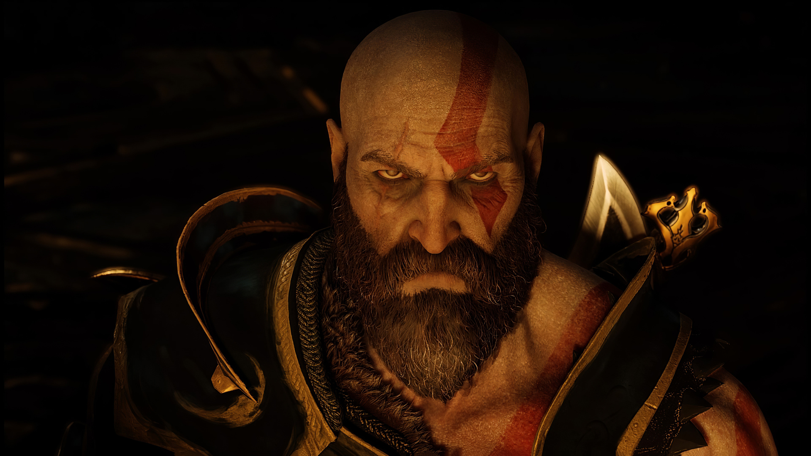
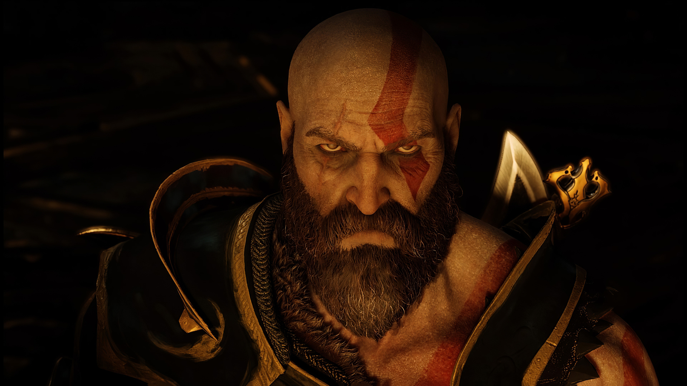

Dante
Dante, de Devil May Cry, é um verdadeiro pesadelo para qualquer demônio que cruze seu caminho. Ele é um híbrido de humano e demônio, dotado de força sobre-humana, velocidade e uma resistência quase invulnerável1.
Geralt
Geralt de Rivia foi um bruxo lendário da Escola do Lobo ativo ao longo do século XIII. Ele amava a feiticeira Yennefer, considerada o amor de sua vida apesar de seu relacionamento tumultuado, e se tornou o pai adotivo de Ciri.
homem aranha
O Homem-Aranha tem força sobre-humana, proporcional à de uma aranha, pode fixar-se a paredes e tetos, incrível agilidade e possui um “sentido de aranha” que o avisa sobre o perigo
Gabriel Belmont
Gabriel Belmont é a personificação da brutalidade e do poder sombrio, um adversário temível que não conhece piedade
kratos
Kratos é o protagonista da série de jogos God of War. Ele é um guerreiro espartano que se torna o Deus da Guerra após matar Ares. Conhecido por sua força e brutalidade, Kratos é marcado por uma pele pálida devido às cinzas de sua família, que ele carrega como um lembrete de seu passado trágico
Leon
Leon Scott Kennedy é um dos personagens mais icônicos da franquia Resident Evil. Durante o surto do T-Vírus, Leon demonstrou coragem e habilidades excepcionais de sobrevivência.Ele é frequentemente retratado como um personagem determinado e resiliente, enfrentando desafios assustadores com coragem e determinação
sub zero
Sub-Zero é um guerreiro implacável e letal, um verdadeiro mestre da criomancia. Ele é capaz de transformar o campo de batalha em um cenário de pesadelo gelado. Com um simples gesto, ele pode congelar seus inimigos no lugar, deixando-os vulneráveis a seus ataques devastadores.